Note
Go to the end to download the full example code.
volcanoplot¶
Create volcano plots for differential expression analysis.
Volcano plots visualize statistical significance (-log10 p-value) against effect size (log2 fold change), commonly used in genomics to identify differentially expressed genes.
Load packages¶
import numpy as np
import pandas as pd
import cnsplots as cns
Generate synthetic differential expression data¶
Create a realistic DE dataset with known significant genes.
np.random.seed(0)
n_genes = 500
logfc = np.random.normal(0, 1.5, n_genes)
pvals = 10 ** (-np.abs(logfc) * np.random.uniform(0.5, 3, n_genes))
pvals = np.clip(pvals, 1e-50, 1)
de = pd.DataFrame(
{
"log2FoldChange": logfc,
"-log10(adjp)": -np.log10(pvals),
"symbol": [f"Gene{i}" for i in range(n_genes)],
}
)
de.head()
Basic volcano plot¶
Display DE results.
cns.figure(200, 200)
cns.volcanoplot(de, x="log2FoldChange", y="-log10(adjp)", symbol="symbol")
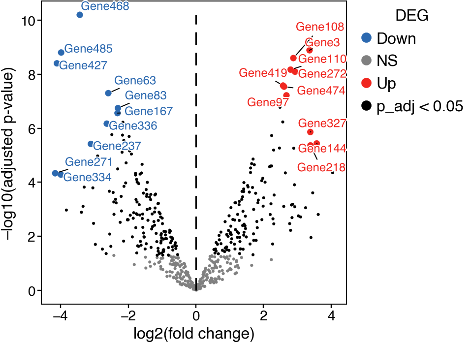
<Axes: xlabel='log2(fold change)', ylabel='–log10(adjusted p-value)'>
More labeled genes¶
Highlight additional genes of interest.
cns.figure(200, 200)
cns.volcanoplot(
de,
x="log2FoldChange",
y="-log10(adjp)",
symbol="symbol",
show_list=[
"Gene156",
"Gene44",
"Gene55",
"Gene81",
"Gene219",
"Gene451",
"Gene104",
"Gene135",
],
)
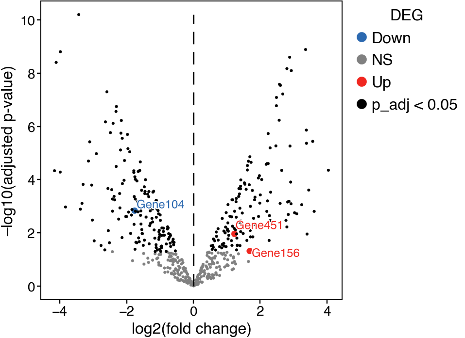
<Axes: xlabel='log2(fold change)', ylabel='–log10(adjusted p-value)'>
Fewer labeled genes¶
Minimal labeling for cleaner visualization.
cns.figure(200, 200)
cns.volcanoplot(
de,
x="log2FoldChange",
y="-log10(adjp)",
symbol="symbol",
show_list=["Gene156", "Gene55"],
)
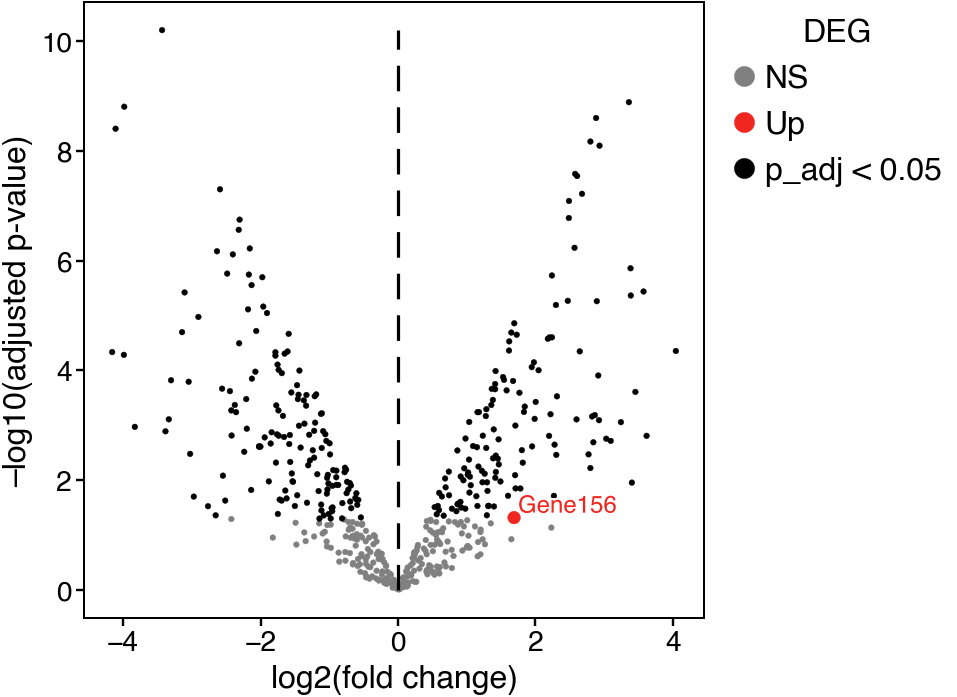
<Axes: xlabel='log2(fold change)', ylabel='–log10(adjusted p-value)'>
No gene labels¶
Show the distribution without annotations.
cns.figure(200, 200)
ax = cns.volcanoplot(
de,
x="log2FoldChange",
y="-log10(adjp)",
symbol="symbol",
show_list=[],
)
ax.set_title("Volcano Plot")
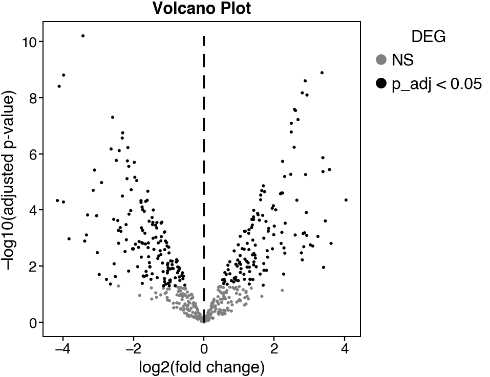
Text(0.5, 1.0, 'Volcano Plot')
Larger figure size¶
Increase dimensions for presentations.
cns.figure(250, 250)
ax = cns.volcanoplot(
de,
x="log2FoldChange",
y="-log10(adjp)",
symbol="symbol",
show_list=["Gene156", "Gene44", "Gene55", "Gene81"],
)
ax.set_title("Differential Expression")
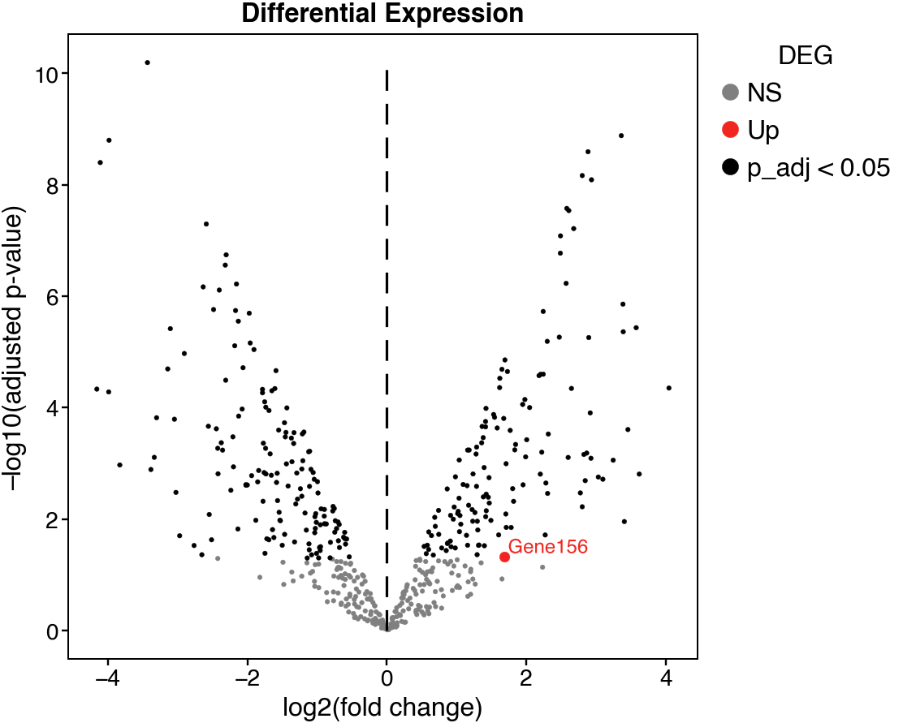
Text(0.5, 1.0, 'Differential Expression')
Square aspect ratio¶
Equal width and height for balanced appearance.
cns.figure(180, 180)
cns.volcanoplot(
de,
x="log2FoldChange",
y="-log10(adjp)",
symbol="symbol",
show_list=["Gene156", "Gene44"],
)
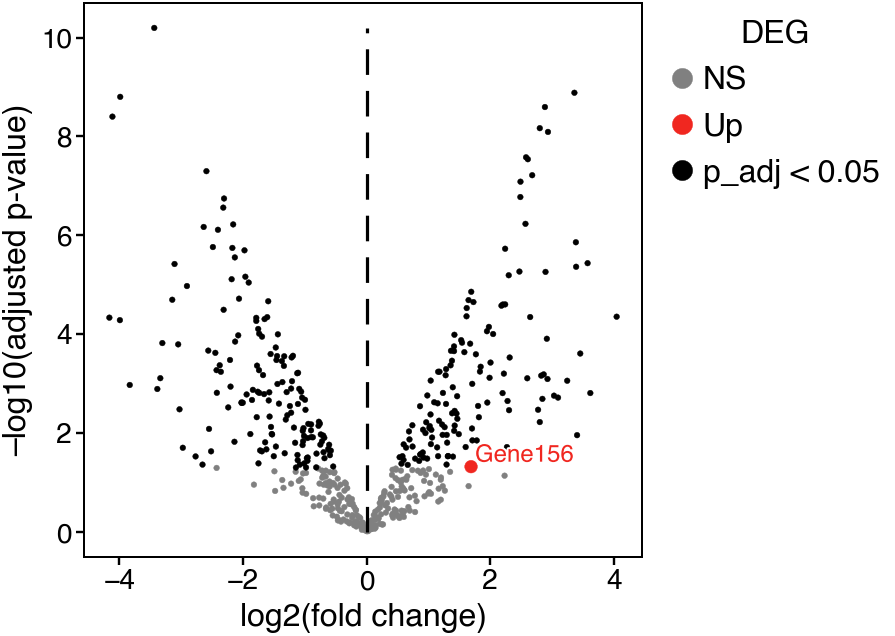
<Axes: xlabel='log2(fold change)', ylabel='–log10(adjusted p-value)'>
Wide volcano plot¶
Emphasize fold change axis.
cns.figure(280, 180)
cns.volcanoplot(
de,
x="log2FoldChange",
y="-log10(adjp)",
symbol="symbol",
show_list=["Gene156", "Gene44", "Gene55"],
)
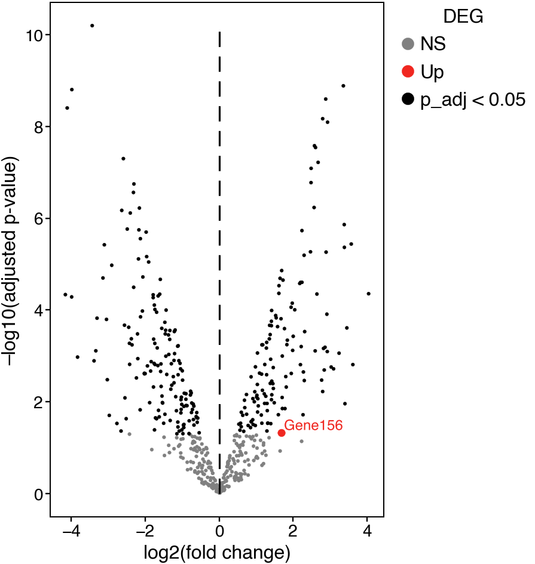
<Axes: xlabel='log2(fold change)', ylabel='–log10(adjusted p-value)'>
Tall volcano plot¶
Emphasize significance axis.
cns.figure(180, 250)
cns.volcanoplot(
de,
x="log2FoldChange",
y="-log10(adjp)",
symbol="symbol",
show_list=["Gene156", "Gene44", "Gene55"],
)
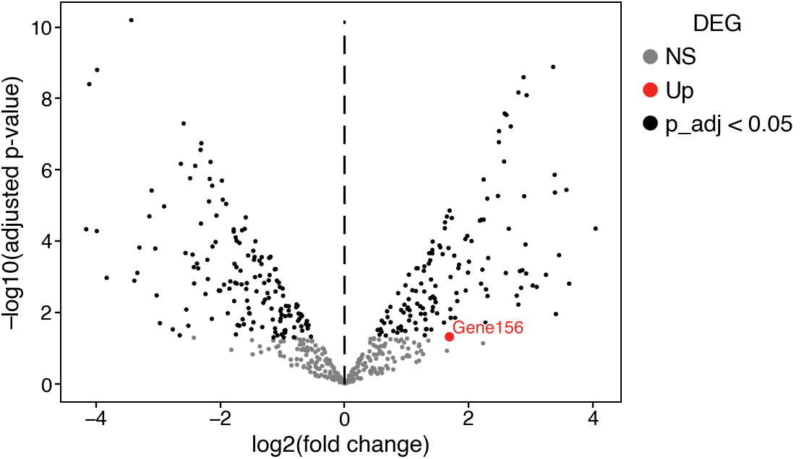
<Axes: xlabel='log2(fold change)', ylabel='–log10(adjusted p-value)'>
Synthetic DE data with clear groups¶
Generate data with distinct up/down-regulated genes.
np.random.seed(42)
n_genes = 5000
synthetic_de = pd.DataFrame(
{
"gene": [f"Gene_{i}" for i in range(n_genes)],
"log2FC": np.concatenate(
[
np.random.normal(-3, 0.5, 100), # Downregulated
np.random.normal(0, 0.5, 4700), # No change
np.random.normal(3, 0.5, 200), # Upregulated
]
),
"pvalue": np.concatenate(
[
np.random.uniform(1e-10, 1e-4, 100),
np.random.uniform(0.05, 1, 4700),
np.random.uniform(1e-15, 1e-5, 200),
]
),
}
)
synthetic_de["-log10p"] = -np.log10(synthetic_de["pvalue"])
cns.figure(200, 200)
ax = cns.volcanoplot(
synthetic_de,
x="log2FC",
y="-log10p",
symbol="gene",
show_list=["Gene_0", "Gene_4800", "Gene_4900"],
)
ax.set_title("Synthetic DE Data")
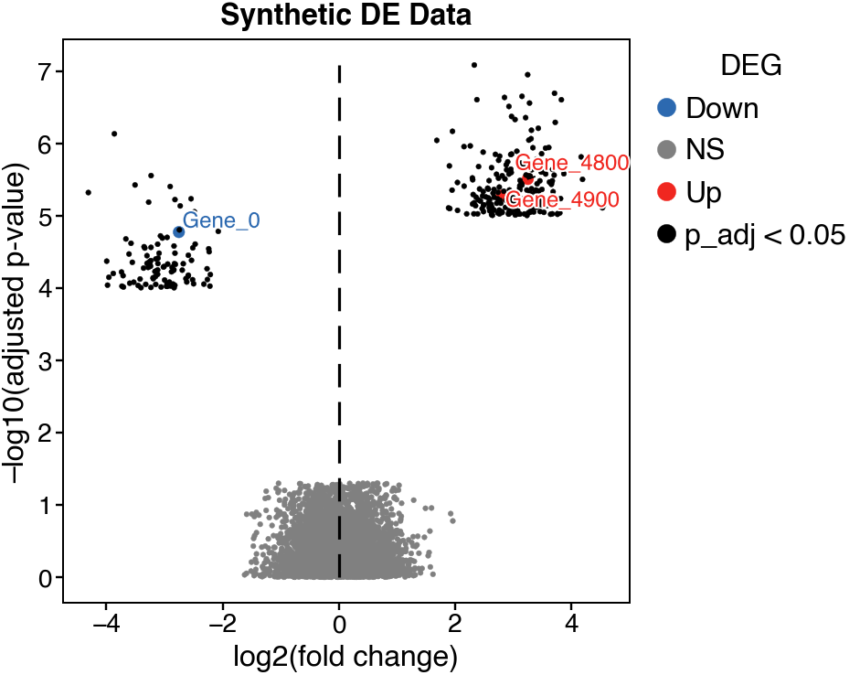
Text(0.5, 1.0, 'Synthetic DE Data')
Highlighting specific pathways¶
Label genes from a pathway of interest.
pathway_genes = ["Gene_4800", "Gene_4850", "Gene_4900", "Gene_4950", "Gene_4999"]
cns.figure(200, 200)
ax = cns.volcanoplot(
synthetic_de,
x="log2FC",
y="-log10p",
symbol="gene",
show_list=pathway_genes,
)
ax.set_title("Pathway Genes Highlighted")
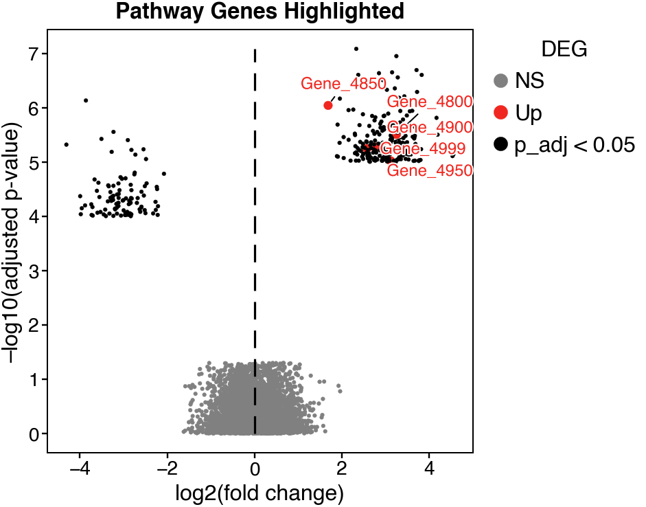
Text(0.5, 1.0, 'Pathway Genes Highlighted')
Comparing conditions with multipanel¶
Side-by-side volcano plots for different comparisons.
np.random.seed(42)
# Condition A vs Control
de_a = pd.DataFrame(
{
"gene": [f"Gene_{i}" for i in range(1000)],
"log2FC": np.random.normal(0, 1.5, 1000),
"pvalue": np.random.uniform(1e-8, 1, 1000),
}
)
de_a["-log10p"] = -np.log10(de_a["pvalue"])
# Condition B vs Control
de_b = pd.DataFrame(
{
"gene": [f"Gene_{i}" for i in range(1000)],
"log2FC": np.random.normal(0.5, 2, 1000),
"pvalue": np.random.uniform(1e-10, 1, 1000),
}
)
de_b["-log10p"] = -np.log10(de_b["pvalue"])
mp = cns.multipanel(max_width=500)
mp.panel("A", 150, 150, margin=(10, 0, 50, 20))
cns.volcanoplot(
de_a,
x="log2FC",
y="-log10p",
symbol="gene",
show_list=[],
)
mp.get_axes("A").set_title("Condition A vs Control")
mp.panel("B", 150, 150)
cns.volcanoplot(
de_b,
x="log2FC",
y="-log10p",
symbol="gene",
show_list=[],
)
mp.get_axes("B").set_title("Condition B vs Control")
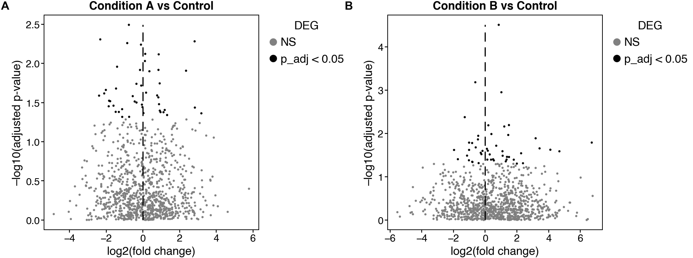
Text(0.5, 1.0, 'Condition B vs Control')
Time course comparison¶
Volcano plots at different time points.
np.random.seed(42)
timepoints = ["Day 1", "Day 3", "Day 7"]
de_list = []
for i, tp in enumerate(timepoints):
de_tp = pd.DataFrame(
{
"gene": [f"Gene_{j}" for j in range(500)],
"log2FC": np.random.normal(i * 0.3, 1 + i * 0.2, 500),
"pvalue": np.random.uniform(1e-6, 1, 500),
}
)
de_tp["-log10p"] = -np.log10(de_tp["pvalue"])
de_list.append(de_tp)
mp = cns.multipanel(max_width=630)
mp.panel("A", 130, 130, margin=(10, 0, 50, 20))
cns.volcanoplot(de_list[0], x="log2FC", y="-log10p", symbol="gene", show_list=[])
mp.get_axes("A").set_title("Day 1")
mp.panel("B", 130, 130, margin=(10, 0, 50, 20))
cns.volcanoplot(de_list[1], x="log2FC", y="-log10p", symbol="gene", show_list=[])
mp.get_axes("B").set_title("Day 3")
mp.panel("C", 130, 130)
cns.volcanoplot(de_list[2], x="log2FC", y="-log10p", symbol="gene", show_list=[])
mp.get_axes("C").set_title("Day 7")
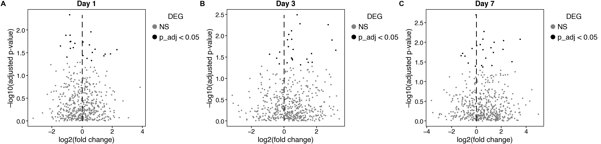
Text(0.5, 1.0, 'Day 7')
Total running time of the script: (0 minutes 3.279 seconds)